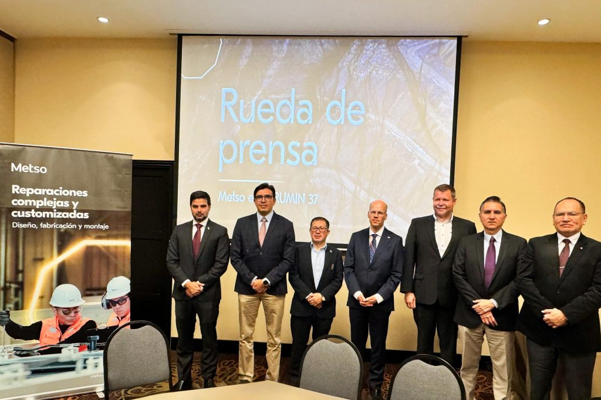

Noticias Locales
Aqui podra ver las ultimas noticias mas importanes de la region local
1. Sismo de 5.8 sacudió Arequipa a un día del inicio de la primavera
Durante la tarde del 23 de septiembre, un evento sísmico sacudió a la región sur del Perú, cuando un sismo de magnitud 5,8 remeció la provincia de Caravelí, en el departamento de Arequipa, según reportó el Instituto Geofísico del Perú (IGP). El movimiento telúrico ocurrió a las 12:39, a solo un día del inicio oficial de la primavera en el hemisferio sur.
Noticias relacionadas
2. Metso apuesta por Arequipa con una nueva planta de 25,000 metros cuadrados en La Joya
La finlandesa Metso confirmó que el próximo mes colocará la primera piedra de su nueva planta en el distrito de La Joya, Arequipa. La empresa indicó que la nueva planta responde a que su actual Service Center, ubicada en Río Seco, viene operando al 80% de su capacidad y no puede expandirse en áreas colindantes.
Pablo Ludeña, Director Site Account de Metso, resaltó que la inversión en la región se da por los buenos resultados que ha venido obteniendo la empresa por el desarrollo de la industria minera, la cual “es el principal motor para que los proveedores puedan seguir desarrollándose y haciendo inversiones en el Perú”.
noticias relacionadas 